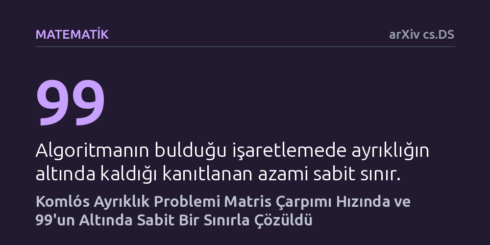

MATEMATIK · arXiv cs.DS · 2026-10-17
Sütun normları en fazla bir olan matrislerde satır dengesini sağlayan sabit sınırlı ve hızlı bir işaretleme algoritması araştırıldı. Geliştirilen rastgele algoritma, ayrıklığı 99'un altında tutan çözümü teorik matris çarpımı süresinde bularak temel bir hesaplama engelini aştı.
Kombinatorik ve bilgisayar biliminin onlarca yıllık en zorlu denge problemlerinden birinin matris çarpımı hızında çözülebileceğini göstererek yüksek boyutlu veri bölme işlemlerinin kuramsal sınırını kökten değiştiriyor.

Büyük bir veri tablosunda her bir sütunun belirli bir özelliği temsil ettiğini ve amacınızın bu sütunları iki denk gruba ayırmak olduğunu düşünün. Her sütuna bir yön (+1 veya -1) atadığınızda, satırların toplam dengesizliğini ne kadar küçük tutabilirsiniz? Macar matematikçi János Komlós tarafından 1980'lerde ortaya atılan Komlós varsayımı, sütun uzunlukları (Öklid normu) en fazla bir olan herhangi bir matriste, tüm satırların işaretli toplamını matris boyutundan bağımsız evrensel bir sabit sınırın altında tutan bir işaretlemenin daima var olduğunu öne sürer. Bu soru, teorik bilgisayar biliminden makine öğrenmesinde dengeli alt kümeler oluşturmaya kadar pek çok alanın temelini oluşturur.
Uzun yıllar boyunca araştırmacılar bu dengeli işaretlemenin var olup olmadığını tartıştı ve ardından daha pratik bir soru gündeme geldi: Böyle bir işaretleme bilgisayarla ne kadar sürede bulunabilir? Spencer'ın meşhur altı standart sapma teoremi ve ardından gelen çalışmalar varlığı kanıtlasa da, bu işaretlemeyi fiilen üreten algoritmalar hesaplama açısından oldukça ağırdı. Özellikle matris boyutu büyüdükçe gereken işlem sayısı hızla artıyor, bu da teorik olarak varlığı bilinen çözümlerin büyük boyutlu veri problemlerinde kullanılmasını engelliyordu.
Önceki en hızlı algoritmalar, matrisin satırlarını kontrol altında tutmak için spektral potansiyel fonksiyonlarından yararlanıyordu. Ancak Li tarafından geliştirilen önceki en iyi yöntemde, en büyük özdeğerin hemen altındaki spektral aralık 1/n mertebesine kadar küçülebiliyordu. Bu durum her adımda atılabilecek ilerleme mesafesini kısıtlıyor ve algoritmanın ancak çok küçük adımlarla, yüz binlerce ek cebirsel işlem yaparak ilerlemesine yol açıyordu.
Emile Anand ve Peter Chen, bu darboğazı çözmek için iki kritik yenilik geliştirdi. İlk olarak, özdeğerler arasında herhangi bir aralık koşulu gerektirmeyen ve her zaman pürüzsüz kalan bir rezolvent potansiyeli tanımladılar. İşaret seçimlerini rastgele yaparak potansiyel fonksiyonunun yalnızca içbükey kalmasını sağladılar ve ilerlemeyi ayrı bir mekanizmayla takip ettiler. İkinci olarak, her adımda pahalı spektral ayrıştırmalar yapmak yerine, adımları paketler halinde gruplayıp yön altuzayını birden fazla adım boyunca yeniden kullandılar. Böylece yüksek maliyetli doğrusal cebir işlemleri her ölçekte yalnızca logaritmik sıklıkta hesaplanır hale geldi.
Yazarların geliştirdiği rastgele algoritma, sütunlarının Öklid normu en fazla bir olan m x n boyutlu matrisler için ayrıklığı 99'un altında tutmayı kesin olarak başarıyor. Üstelik bunu, beklenen bit karmaşıklığı cinsinden girdi kodlama uzunluğu ile matris çarpımı üssünün toplamı seviyesinde, yani teorik olarak matris çarpımı süresinde gerçekleştiriyor.
Bu sonuç, Li'nin çok daha fazla aritmetik işlem gerektiren önceki yöntemine kıyasla kayda değer bir hız artışı anlamına geliyor. Ayrıca yazarlar sadece soyut matematiksel analizle yetinmeyip, gerçek bilgisayarlarda karşılaşılan yuvarlama hatalarını da dikkate alan sonlu duyarlık analizi gerçekleştirdi. Bu analiz, algoritmanın sayısal olarak kararlı olduğunu ve kuramsal bit karmaşıklığı sınırının pratikte de bozulmadan korunduğunu ortaya koydu.
Bilgisayar biliminde matris çarpımı süresi, temel cebirsel problemler için adeta bir altın standart ve teorik hız duvarıdır. Komlós probleminin bu sınıra çekilebilmesi, yüksek boyutlu karmaşık veri kümelerinde neredeyse kusursuz denge sağlayan işaretlemelerin artık matris çarpımı kadar doğal ve hızlı biçimde hesaplanabileceğini kanıtlıyor. Bu ilerleme, rastgeleleştirilmiş algoritmalar ve sayısal optimizasyon alanında yeni bir dönüm noktası oluşturuyor.
Yine de bu sonucun henüz bağımsız hakem denetiminden geçmemiş bir önbaskı olduğunu unutmamak gerekir. İspatın matematik dünyasınca doğrulanmasının ardından, rezolvent potansiyeli ve paketlenmiş yön yaklaşımının makine öğrenmesi modellerinde seyreltme, boyut indirgeme ve deneysel tasarım gibi alanlardaki optimizasyon problemlerine de uyarlanması bekleniyor.